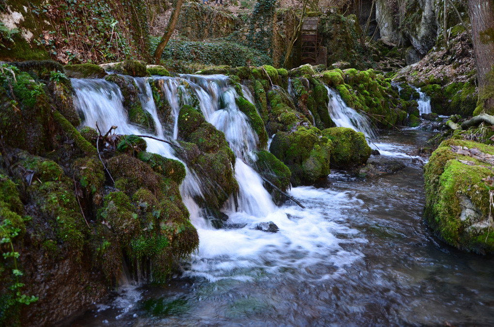

Криви Вир
Криви Вир је насеље у Србији у општини Бољевац у Зајечарском округу. Према попису из 2022. било је 215 становника (према попису из 1991. било је 802 становника).
Криви Вир је место где је избила Тимочка буна, традиционални сточарски крај, где је настао посебан сој овце -- кривовирска жуја
Овде се налазе Манастир Лозица и Извор Пећура.
Историја
До 1804, Криви Вир је, као и читава Тимочка крајина (позната у оно време под именом Црна Река), припадао Видинском пашалуку. Почетком године 1807, по заузимању Београда, у Криви Вир је из устаничке Србије стигао хајдук Вељко са неколико стотина бећара, и начинивши у селу шанац као своје главно упориште, побунио је читаву Крајину. По пропасти устанка 1813. Црна Река била је потчињена турском муселиму у Зајечару. Криви Вир је припојен Кнежевини Србији 1833, приликом припајања 6 нахија за владе кнеза Милоша Обреновића, и постао је део Бољевачког среза Црноречког (Зајечарског) округа. Године 1870. село је имало 361 пореску главу (тј. пунолетних сељака који плаћају порез) и отприлике 4 пута више становника (око 1.400).
 Пећура се налази у селу Криви Вир и чини комплекс изворишта Црног Тимока. Овај извор је заправо извориште реке Црни Тимок, који се састоји од два извора који нису међусобно повезани. Главни извор се налази на почетку Пећурске клисуре, одакле вода делом извире испод стена, а делом из пећине и има константан ток воде, са мањим колебањима, али не пресушује. Други извор је слабији и смештен је у малој пећини, близу остатака некадашње воденице и он у летљем периоду често пресушује. На самом изворишту Црног Тимока је пре Другог светског рата функционисала и мала хидроцентрала, која је снабдевала село електричном енергијом. У комплексу Пећура постоје 3 пећине и један термални извор чија је температура воде 21-22 степена Целзијуса. Криви Вир се сматра центром Тимочке буне.
Галерија